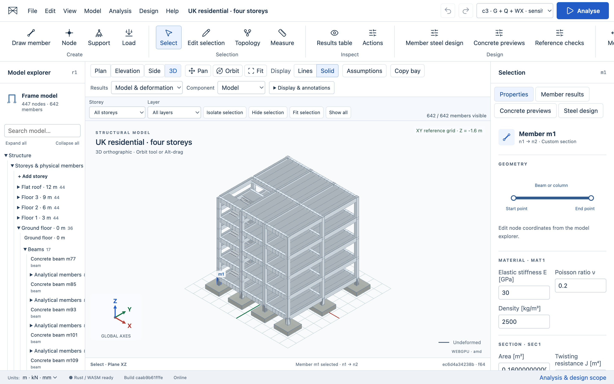

Model on the canvas
Draw members, place supports and loads, snap precisely, edit properties, and undo topology changes. Organise by storey and layer; isolate selections and switch between Lines and Solid display.
Build and inspect 3D frames, analyse load cases, and check steel members directly from your model. Compare catalogue sections and keep each design result tied to its exact analysis. No account required.

MODEL · ANALYSE · REVIEW
Model Explorer, a central viewport, Selection Inspector and Results drawer keep modelling, analysis and design in one workspace.
Draw members, place supports and loads, snap precisely, edit properties, and undo topology changes. Organise by storey and layer; isolate selections and switch between Lines and Solid display.
Authoritative geometry, validation, units, stiffness assembly, solving, and recovery run in the WebAssembly kernel.
Sparse frame solverInspect displacements, reactions, member actions, diagrams, equilibrium checks, local axes, and signed component values.
Revision-aware resultsAssign a recognised section and material, complete member design inputs, and check exact analysis actions. Review all members by status or utilisation, follow governing checks, and inspect design colours with a text legend.
AISC 360-22 LRFD · bounded checksSearch five verified W-section records and compare candidates through full frame reanalysis. Review checks and selected-member mass before explicitly applying a section. Reanalyse the changed model to refresh its results.
Finite comparison · explicit apply & undoBeam, slab and pad-footing previews organise geometry, actions and provenance. The four-storey residential reference includes slabs, return stairs and pad footings. Synthetic inputs are labelled; these previews do not establish a code-compliant design.
Eurocodes with UK NAs · not enabledSave locally, reopen projects, and export strict project JSON, CSV results, or a standalone HTML calculation report.
BUILT FOR SCRUTINY
Structural Workbench keeps numerical authority, display state, and project persistence deliberately separate. A changed model makes old results visibly stale. Failed operations preserve the last recoverable project.
Read the specificationCommitted geometry and calculations stay in Rust using f64 values.
Every result references its source model, settings, and solver build.
Projects remain in your browser unless you choose to export them.
Unimplemented engineering domains are rejected instead of approximated silently.
PREVIEW STATUS
The current release supports linear, small-displacement 3D Euler–Bernoulli frames, nodal actions, uniform member loads, self weight, prescribed supports, and explicit combinations.
Steel design currently covers a bounded AISC 360-22 LRFD W-section workflow. Lateral-torsional buckling, second-order stability and serviceability checks remain unsupported. A model review is not a whole-building approval.
Concrete beam, slab and footing workflows are previews. Eurocode/UK National Annex design checks await verified resources and validation; residential loads and ground properties are provisional. Shell/solid analysis, nonlinear response, seismic design, connections and reinforcement detailing are not provided. Commercial numerical parity is UNKNOWN.
OPEN SOURCE · MIT LICENSED